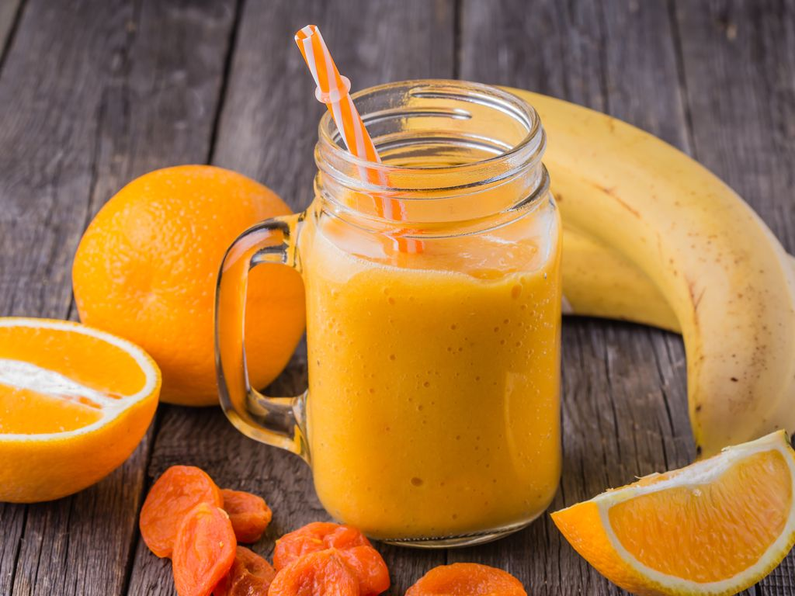

Super jus de fruits
Incredients
- 1 Citron
- 2 Oranges
- 10ml de colis de framboise
- 375ml de jus de pommes
Instructions
-
Presser le citron : A l’aide d’un presseur à agrume,
presser le citron et verser le jus de citron dans un
bol.
-
Presser les oranges : A l’aide d’un presseur à
agrumes, presser les deux oranges et ajouter le jus
d’orange au jus de citron .
-
Ajouter le jus de pomme : Ajouter dans le bol le jus
les 375ml de jus de pommes.
-
Ajouter le coulis de framboise : Mélanger
délicatement avec un fouet en ajoutant au fur et le
coulis de framboise.
-
Servis bien frais : Si possible laisser la jus au
frigo et servir bien frais.